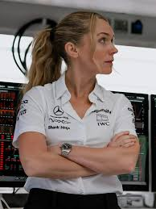

F1 LA PELICULA
El piloto legendario Sonny Hayes es convencido de salir de su retiro para liderar a un equipo de la Fórmula 1 en dificultades y ser mentor de un joven piloto talentoso, mientras se busca una última oportunidad de gloria.
- Género: Accion, Drama
- Año: 2025
- Duración: 2h 35min
- Director: Joseph Kosinski y Ehren Kruger
- Productores/as: Jerry Bruckheimer, Dede Gardner y Lewis Hamilton
- Calificación general: 7.8/10
- Clasificación por edad: +18
- Plataformas: Apple TV y Prime Video
Tráiler
REPARTO
BRAD PITT
DAMSON IDRIS
JAVIER BARDEM

KERRY CONDON
KIM BODNIA
RESEÑAS DESTACADAS
Calificación: 8.0 / 10

gary-szendzielarz-142-951616 dice:
Soy fan de la Fórmula 1 desde mediados de los 80.
...y entré esperando una película de Hollywood y un entretenimiento emocionante... y cumplió con las expectativas. Mira, incluso los fanáticos acérrimos de la F1 tienen que admitir que no todos los momentos de una carrera son divertidos. Esta película tomó elementos de la historia de las carreras y los usó a lo largo de nueve carreras. Ya fuera la bola de fuego de Grosjean o el momento en que Senna le arrebató el extintor al comisario, los tomaron y los usaron. Sí, hubo algunos elementos exagerados, pero ¿qué preferirías? ¿Discusiones sobre los límites de la pista?
Calificación: 6.0 / 10
MorfenZ dice:
De un fanático de la F1 de toda la vida.
Seré breve 9/10 visual. Muy Top Gun. 7.5/10 precisión de carrera. En general bien excepto por el hecho de que Sonny no vio una bandera negra por ninguna de las cosas que hizo, y, los bordillos no lanzan los coches de F1 así. 4/10 historia. La misma vieja historia de heroísmo individual de Hollywood que se ha contado 200 veces. 6/10 personajes. Solo se establece la motivación del personaje de Sonny. Otros personajes tienen diferentes grados del síndrome de "¿por qué quieren estar aquí?", algunos peores que otros. Pero los personajes principales tienen un desarrollo de personaje visible a lo largo de la película, así que en general no son personajes sorprendentemente malos. Mucha gente se queja de la duración. Claro que la historia se puede contar cómodamente en 90 minutos. Pero estiraron los 40 minutos adicionales para mostrar principalmente algunas carreras de F1 ficticias apasionantes. No es el peor uso del tiempo en pantalla. 6.5/10 mi puntuación final redondeando a 7.
Calificación: 7.0 / 10
RacingFanatic dice:
Visualmente impresionante, pero con algunos baches narrativos.
"F1 la película es una experiencia visual impresionante que captura la emoción de las carreras de Fórmula 1 como nunca antes se había hecho en el cine. Las cámaras IMAX montadas directamente en los monoplazas ofrecen una perspectiva única y emocionante que te sumerge en la acción de las carreras. Sin embargo, a pesar de su impresionante presentación visual, la película sufre de algunos baches narrativos que afectan su ritmo general. En particular, el segundo acto se siente algo lento y estira la duración innecesariamente hasta pasadas las dos horas. Aun así, el clímax final en la última vuelta está tan bien montado que te mantiene al borde del asiento, olvidando cualquier bache narrativo previo."
Calificación: 8.0 / 10
Speedster89 dice:
Una película de carreras como ninguna otra.
"F1 la película es un hito tecnológico que eleva el género de las películas de carreras a nuevas alturas. Lo que realmente destaca no es la historia, sino el despliegue de cámaras IMAX montadas directamente en los monoplazas, algo nunca antes visto. Es un hito tecnológico que hace que cualquier otra película de carreras anterior parezca un videojuego de baja resolución. La emoción de las carreras se transmite de manera tan intensa que te sientes como si estuvieras en la pista junto a los pilotos. Aunque la historia puede ser predecible, la experiencia visual única hace que valga la pena verla en la pantalla grande."
Calificación: 6.0 / 10
Cinefilo88 dice:
Una película de carreras con algunos baches narrativos.
"Aunque la acción es impecable, la banda sonora de Hans Zimmer se siente algo repetitiva y no logra alcanzar la originalidad de sus trabajos anteriores. Los efectos de sonido de los motores son tan potentes que, por momentos, entierran los diálogos clave entre los protagonistas. A pesar de estos baches narrativos, la película ofrece momentos emocionantes en la pista que hacen que valga la pena verla para los fanáticos de las carreras."
RELACIONADOS

RUSH PASION Y GLORIA
Calificación: 7.5/10
DURACION: 2h 03min

CONTRA LO IMPOSIBLE
Calificación: 8.0/10
DURACION: 2h 33min

GRAN TURISMO
Calificación: 7.7/10
DURACION: 2h 15min

FERRARI
Calificación: 6.4/10
DURACION: 2h 11min